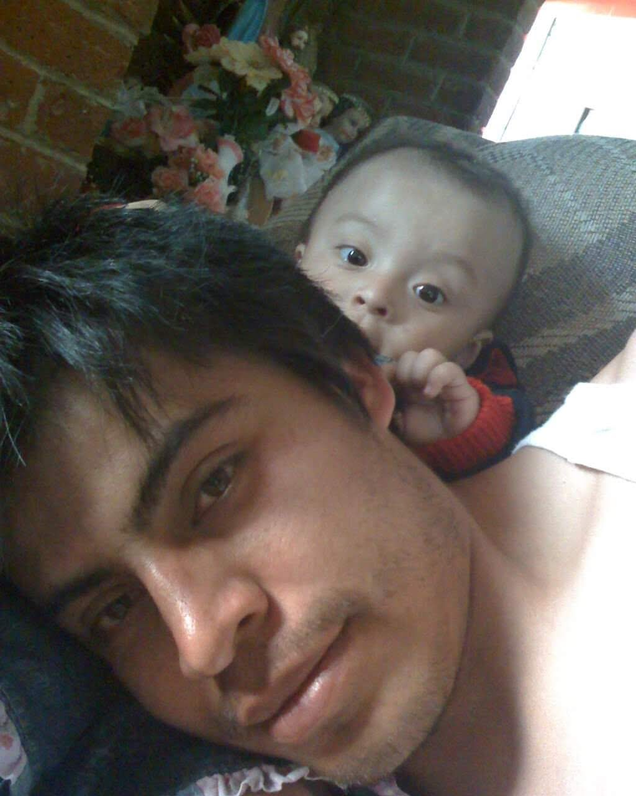

Nació el 25 de Diciembre 2007 en Nextlalpan y sus Padres Alejandro Piliado Cedillo y Itzel de Jesus Estrada Luna la nombraron Milagros Itzel Piliado Estrada, luego de unos años le detectaron Arritmia sinusal y estuvo en constante revisión en el hospital de niños hasta que ya no hubiera mayor peligro. Vivió mayor parte de su vida mudándose por eso detesta las mudanzas, creció en Zumpango Estado de México junto a su Familia Materna y estudió su kinder en "Ramón Rangel" 3 años de la cual no recuerda tanto ,primaria en "Tierra y Libertad" 6 años donde conoció a sus mejores amigos y descubrió mayor parte de sus gustos y hobbies , su secundaria en la institución "Adolfo Lopez Mateos" la que considera fue su mejor etapa junto a amigos y familiares y donde conoció a su primer pareja y a la mayoría de sus actuales amigas ,después de la pandemia desarrollo sus hobbies.Finalmente después de años deseando un hermano el 6 de Enero 2021 nació su Hermano menor Jesus Leonardo Piliado Estrada y se convirtió en la persona más importante de su vida . Ingresó en 2022 al CBT Dr. Alfonso León de Garay Tequixquiac y actualmente está cursando su carrera como Técnico en Informática en 2 grado de preparatoria junto a sus mejores amigos y profesores donde sus materias favoritas son Cálculo Diferencial e Inglés y sus materias menos favoritas son Física y TIC. Su meta a corto plazo es poder terminar la preparatoria, a medio plazo entrar a la universidad que desea y a largo plazo poder tener una carrera terminando trabajando de lo que más disfruta que es la educación con una vida tranquila y acomodada. Espera formar una familia y morir tranquila o terminar con su vida cuando caiga en la quiebra.
